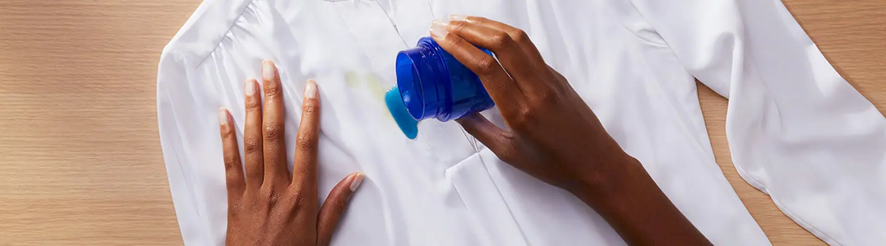
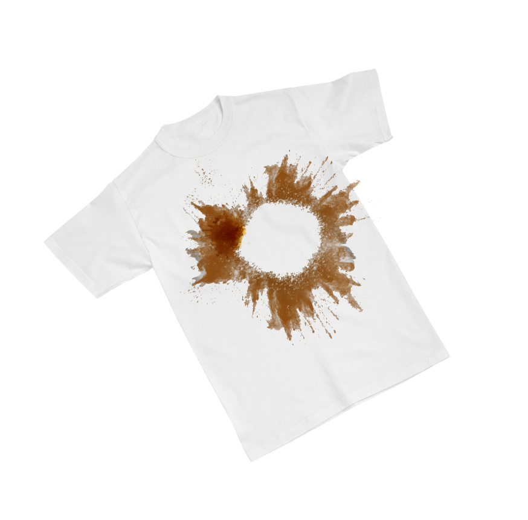
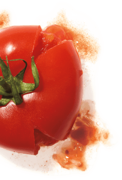
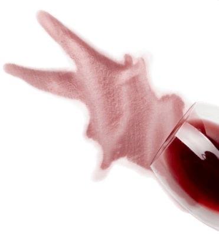
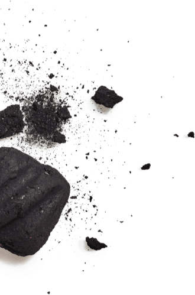
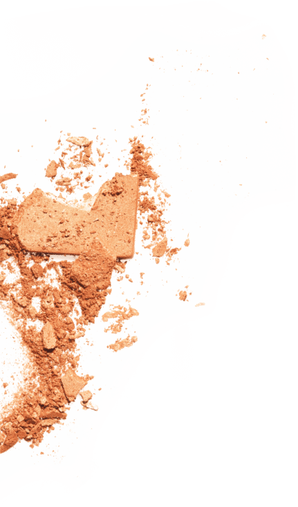
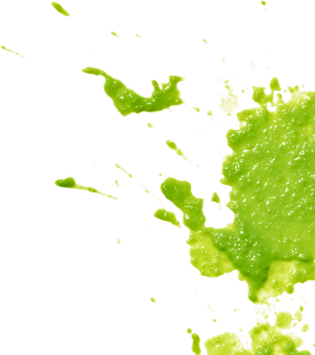
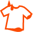

How to remove stains
It’s a fact of life that not all stains are created equal.
It’s important to know what type of stains you’re facing before choosing the most appropriate pretreatment and washing methods to use. Dealing with oily stain removal? You can use a dish soap to pretreat these spots, but for enzymatic stains, like blood, you’ll want to pretreat with a liquid detergent and a clean toothbrush. Follow along to learn how to remove stains from clothes most effectively and more details about some of the most common types.

Stain removal guide






Your Comprehensive Stain Removal Guide
What are the different types of stains?

Blood or Grass stains
Grease
Butter or other oily stains
Body soils
Collar and sweat stains
Bleachable
Stains from coffee and tea
Clay, soil or dirt stains
How do you get rid of stains?
Different stains can require different removal processes. Now that you have an idea of what type of stain you have, the good news is that most stain removal procedures are similar, except when it comes to pretreating. Whatever the cause of the stain, however, here are a few tips on how to get stains out of your favorites:
Step 1. Remove the excess stain
Use a paper towel, a fork, or a brush to get rid of as much of the stain as possible on the garment. This is particularly important for stains that have already dried.
Step 2. Pre-treat stains
Here it’s important to know the type of stain you are dealing with, because each requires a different pretreatment method:
Enzymatic stains.
Pour liquid detergent directly onto the stain. Gently rub the fabric together, or use a soft-bristled toothbrush to help work the detergent into the garment's fibers in a circular motion.
Recommended Products:
Greasy or oily stains.
Presoak in a soaking solution of detergent and warm water, or pretreat them with dish detergent.
Body-soil stains.
Rinse garments affected by body-soil stains under cold water.
Clay or dirt stains.
Presoak in cold water with liquid detergent.
Step 3. Add detergent
Measure the correct amount of detergent according to the product labels and your load size.
Step 4. Wash your garments
Choose the most appropriate wash temperature and cycle setting according to the instructions given by the garment's fabric-care label.
Step 5. Check garments before drying
Don't put the clothes into the drier until the stain is completely removed, as drying will set the stain.
To prevent stains from setting in, remember to soak the garment in cold water as soon as possible. When it comes to removing stains, it’s usually best to use cold water if you're not sure about the stain type. However, for greasy stains, you'll want to use warm water.